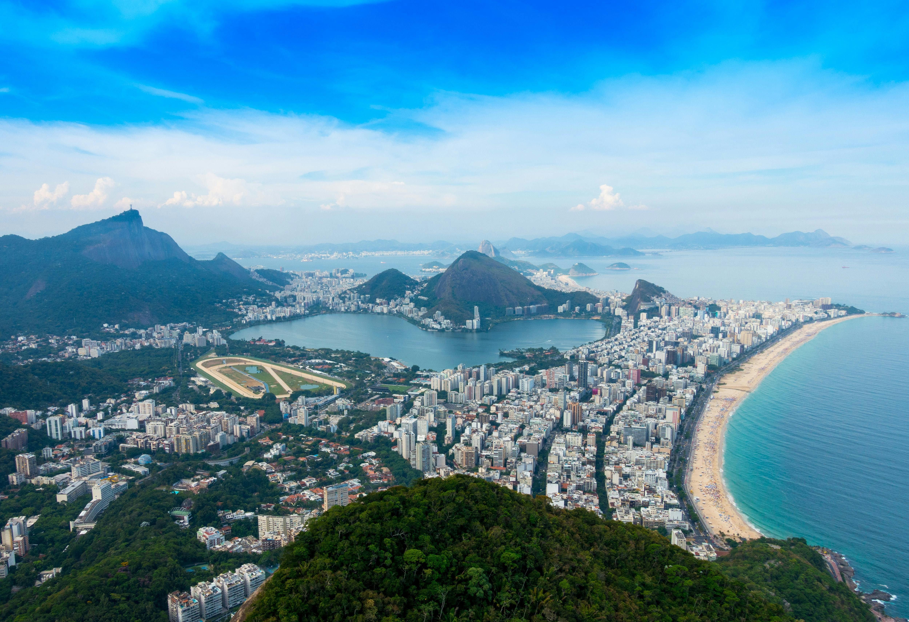
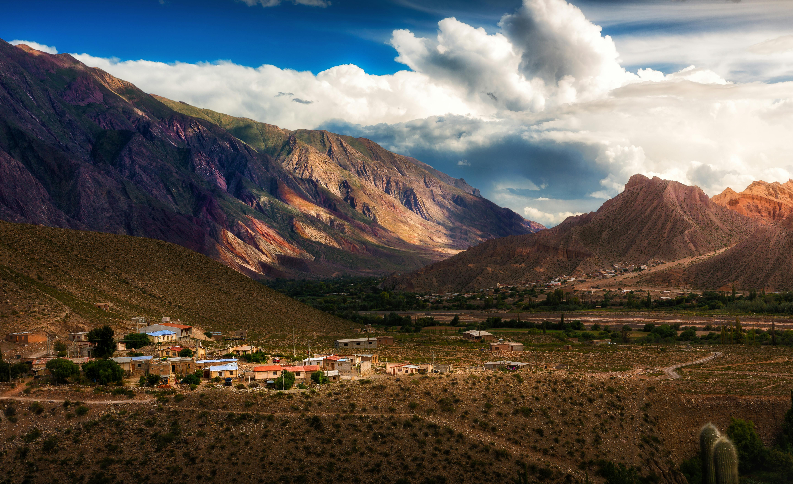
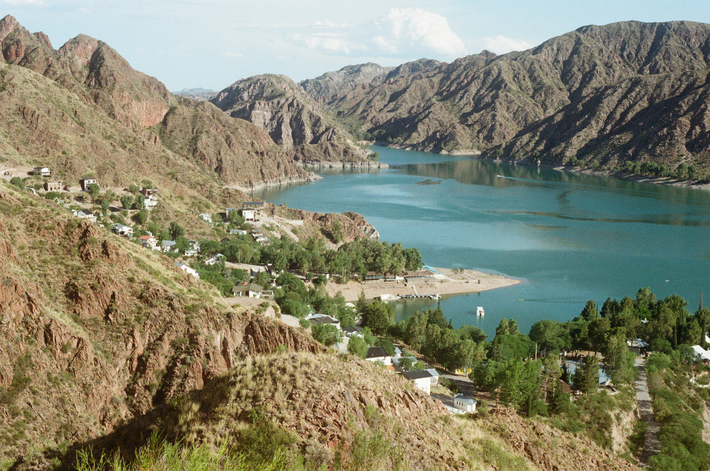
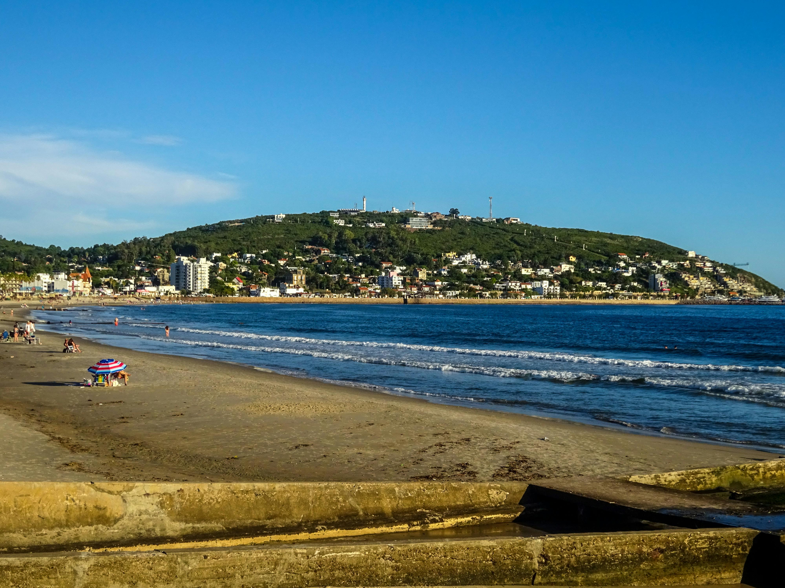
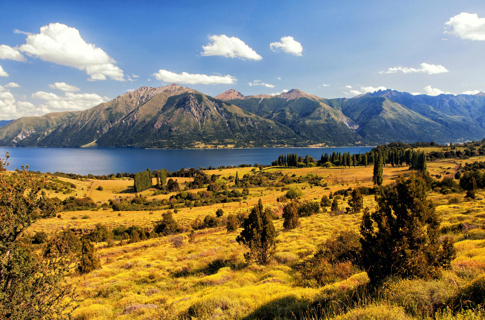
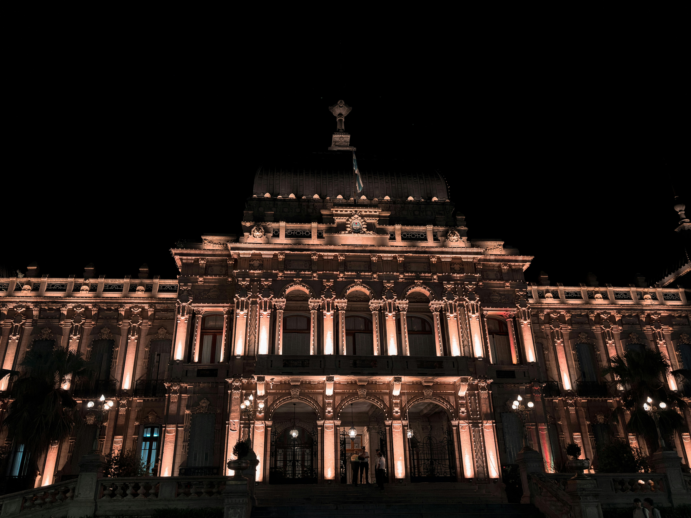

Bariloche
Aventuras en la Patagonia.
Brasil
Playas tropicales y agua cristalina.
Buenos Aires
Arquitectura y ritmo de la gran ciudad.
Cerro de los Siete Colores, Jujuy
Cerro de los siete colores, únicos en el norte de Jujuy.
Jujuy
Jujuy - Paisajes andinos y cultura histórica.
Mendoza
Viñedos al pie de la Cordillera.
Necochea
Extensas playas junto al Atlántico.
Neuquen
Ríos, lagos y naturaleza pura.
San Martin de los Andes
Mendoza, una postal típica de la Patagonia.